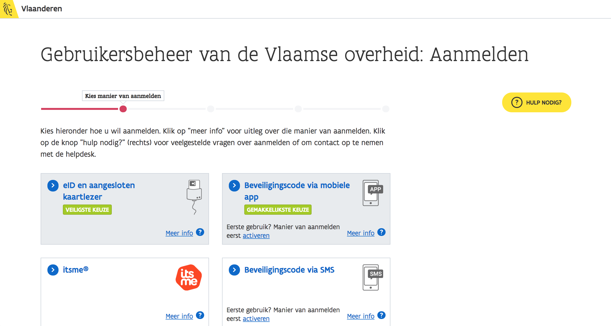
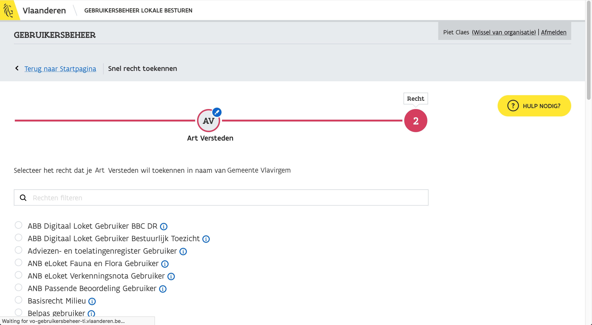

Handleiding Loket Lokaal Bestuur
Waarvoor dient het Loket Lokaal Bestuur?
Aanmelden
Landing pagina
Aanmelden verloopt via het gekende gebruikersbeheer Vlaanderen. Klik op de blauwe knop "meld u aan" om u aan te melden.

Pop-up
Vervolgens verschijnt er een popup, die u enkele veilige opties biedt om mee aan te melden. Verschijnt de popup niet? Zorg dat de instellingen van uw browser goed staan.


Probleem
Indien u toegang wil aanvragen tot bepaalde onderdelen van het loket, neem contact op met uw interne beheerder. Indien er zich een probleem voordoet, neem contact op met het gebruikersbeheer Vlaanderen.
Toezicht
BBC-DR
Indien u toegang wil aanvragen tot bepaalde onderdelen van het loket, neem contact op met uw interne beheerder. Indien er zich een probleem voordoet, neem contact op met het gebruikersbeheer Vlaanderen.
Indien u toegang wil aanvragen tot bepaalde onderdelen van het loket, neem contact op met uw interne beheerder. Indien er zich een probleem voordoet, neem contact op met het gebruikersbeheer Vlaanderen.
Indien u toegang wil aanvragen tot bepaalde onderdelen van het loket, neem contact op met uw interne beheerder. Indien er zich een probleem voordoet, neem contact op met het gebruikersbeheer Vlaanderen.
Indien u toegang wil aanvragen tot bepaalde onderdelen van het loket, neem contact op met uw interne beheerder. Indien er zich een probleem voordoet, neem contact op met het gebruikersbeheer Vlaanderen.
Mandatenbeheer
Administratieve Gegevens
Gebruikersbeheer
Aanmelden en navigeren
Om als interne beheerder rechten toe te kennen aan gebruikers, surft u naar https://vo-gebruikersbeheer-ti.vlaanderen.be/webidm. Meld u aan met uw favoriete aanmeldingssysteem.
Kies vervolgens de juiste doelgroep, en het bestuur waar u zich voor wil aanmelden.

Klik op 'snel rechten toekennen', om te starten.

Zoeken naar de juiste persoon
Je krijgt een overzicht te zien, waar je kan zoeken naar de juiste persoon.


Zoeken naar de juiste rechten
Vervolgens kan je voor de geselecteerde persoon de juiste rechten zoeken. Zoek naar "Loket voor lokale besturen".
Rechten toekennen
Probleem
Indien er zich een probleem voordoet, neem contact op met het gebruikersbeheer Vlaanderen.